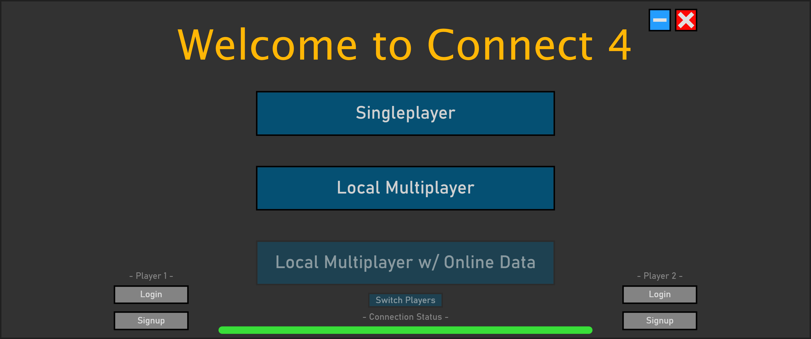
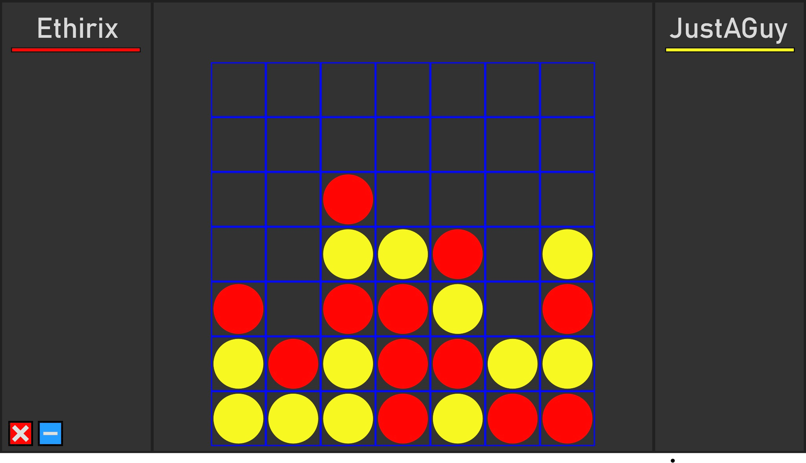

Description
To learn C#, .NET and WPF, I recreated Connect Four for desktop. It features local play, local multiplayer and statistics. The local multiplayer was achieved by having a two-player login system.
Main Menu
This is the main menu, from here is access to all the features of the project. From logging in and signing up to playing against someone else locally.
Connectivity
Players can log in to be able to show their username and track their statistics whilst playing Connect Four. The game does not have any matchmaking or online-play features, however, it does have the necessary pre-requisites to add those features to the game in an alternative version of this. Users logins are stored in an SQL Database and the passwords are hashed using PBKDF2 and salted 50000 times.
Gameplay

Above is a sample of Gameplay between two players that have logged into the game. These players, when
playing against each other will have the statistics from each game registered to the SQL database that
can then be viewed later by going to the statistics page on the main menu.
On the main menu, whoever logs in as Player One will be Red and the same for Player Two and Yellow.
For this reason, the main menu has an option to swap the players around so that players can swap who goes
first.
The statistics gathered are limited but as this was more of a proof of concept than a full-blown statistics page, this shows how many times played as either a pie chart or a bar chart. These charts were created using LiveCharts. When a user is logged in, they would be able to access this page and see their statistics - loaded from the SQL database.